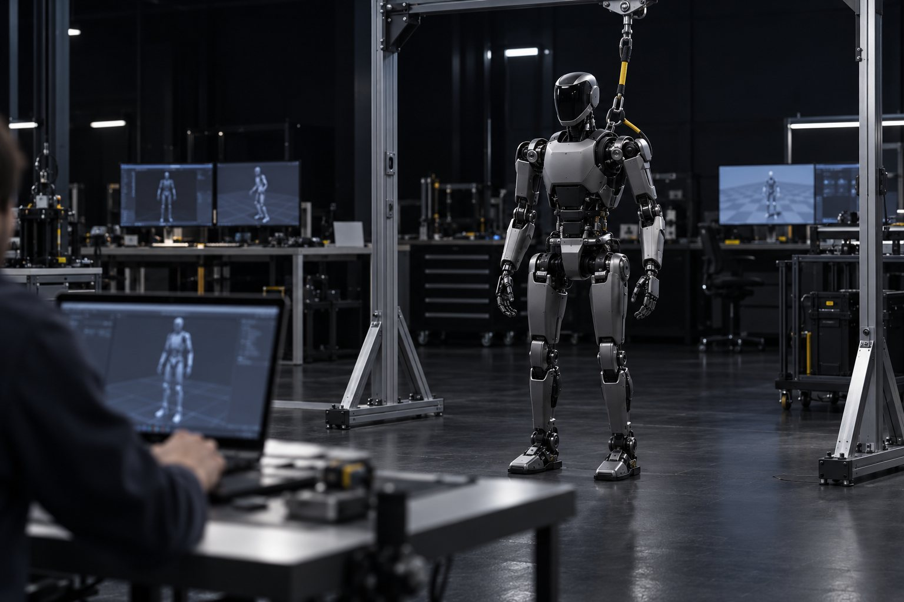
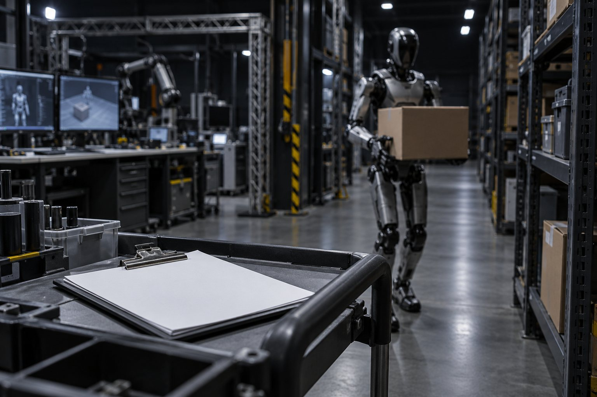
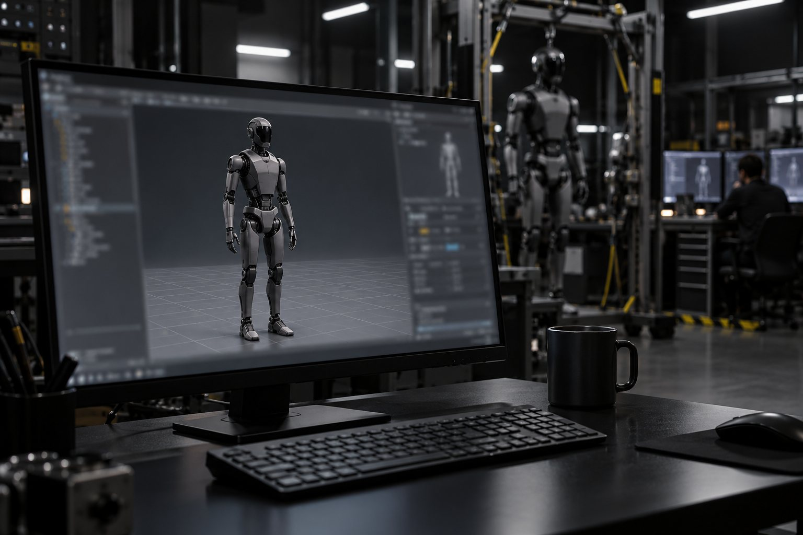
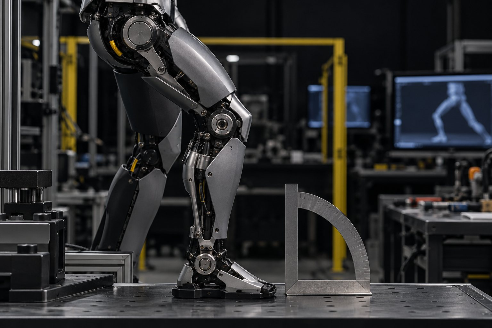
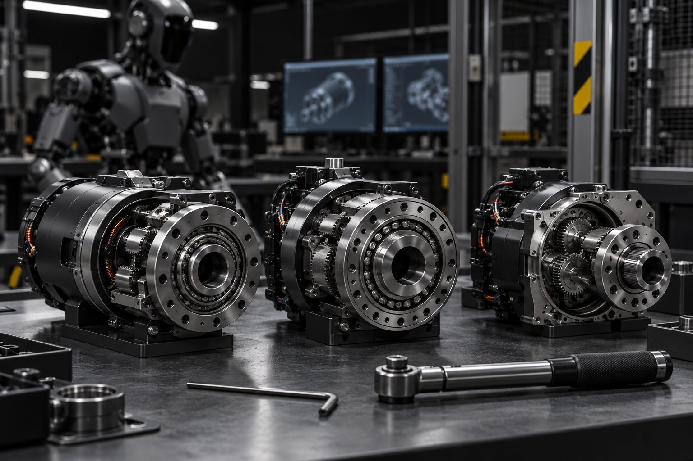
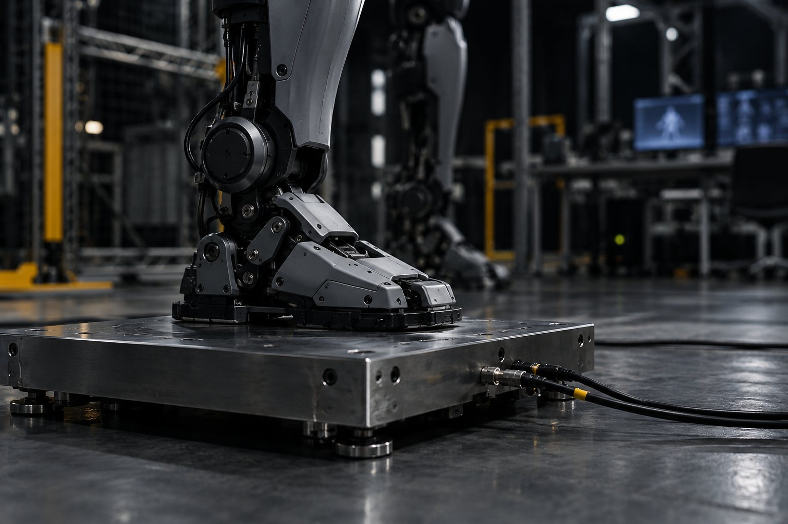
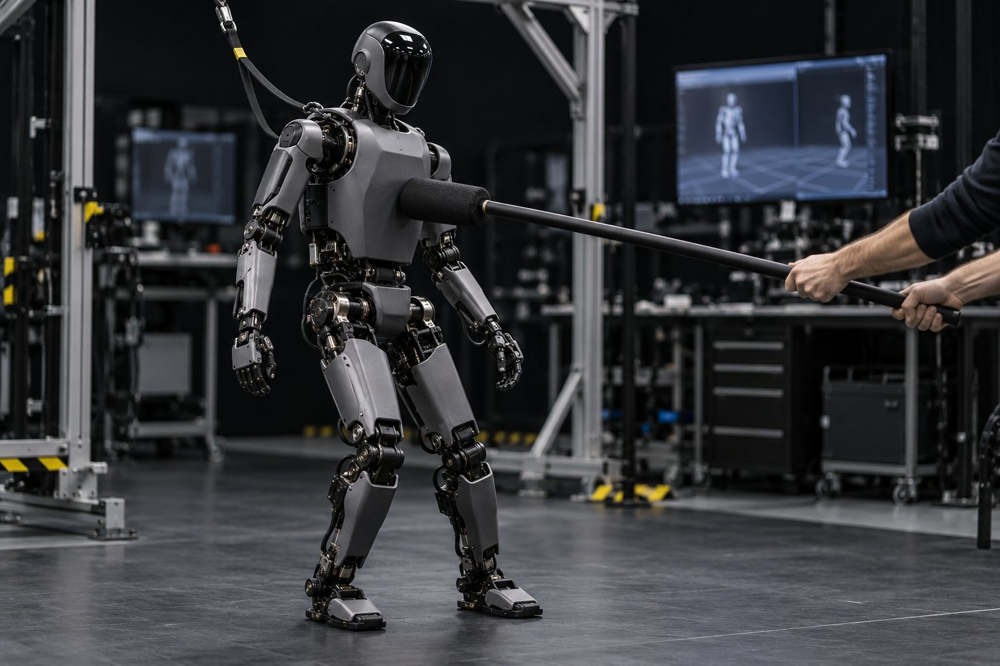
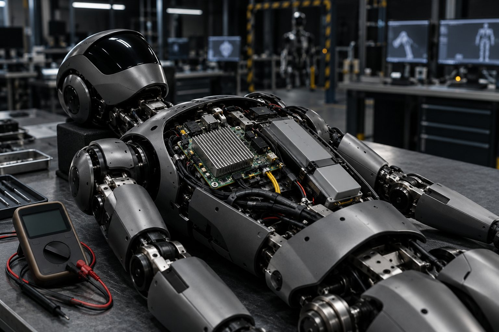

FTH — Humanoid Technology Training · course 0 of 5 · 8 lessons
The humanoid's body: from actuator to simulation model
Before you teach a humanoid to walk, you need to know what it is made of. In eight lessons you tell demo from production, open the Unitree G1 in MuJoCo, read joints, actuators, and sensors straight from the file, measure torque, balance, and runtime, and build the spec sheet. All on CPU, no robot.

- 8lessons
- 120minutes of lessons
- 24exercises with "done when"
- 3.16.0MuJoCo version tested (10/19/2026)
The lessons
From the October 2026 market to the spec sheet: what is actually shipping, how the body is described in an MJCF, joints, actuators, sensors, balance, compute, and battery.

Lesson 1 · 15 minHumanoids in Oct 2026: demo, pilot, and productionHumanoid videos are everywhere; robots delivered to paying customers, not so much. Before you open any model, you learn to tell demo, pilot, and production apart with a source and a date, to read a humanoid's price without falling for an old number, and to recognize the platforms a lab can buy today.
Lesson 2 · 15 minOpen a humanoid in the simulatorA humanoid's spec sheet tells you what the maker wants to show; the simulation file tells you what the body is. In this lesson you install MuJoCo, download only the humanoids from MuJoCo Menagerie, and open the Unitree G1, reading from the file itself how many coordinates, velocities, and motors it has.
Lesson 3 · 15 minDegrees of freedom, joints, and limits"23 to 43 degrees of freedom" is marketing; the joint tree in the file is the body your controller will command. In this lesson you list the G1's 29 joints with limits in degrees and maximum torque, understand why the leg has six, and check that the number matches the actuators.
Lesson 4 · 15 minActuators: the body mapKnee and wrist don't call for the same motor. In this lesson you see the four actuator types that show up in humanoids and where each one tends to win, learn how the MJCF describes a motor, and measure, by simulation, how much torque the G1's knee produces to hold the robot in a squat.
Lesson 5 · 15 minFeeling its own body: IMU, encoders, force and touchA standing humanoid is always falling a little and correcting itself. To do that, it needs to know how it is tilted, where each joint is, and how much weight is on each foot. In this lesson you read the sensors the G1 MJCF declares, add the ones that are missing without editing the file, and check the reading against the robot's weight.
Lesson 6 · 15 minBalance: center of mass and support polygonA standing humanoid is an inverted pendulum on two small feet. In this lesson you calculate the G1's center of mass, support polygon, and center of pressure from the model itself, push the robot with different forces, and separate three things that usually get mixed up: leaving the support, swaying, and falling.
Lesson 7 · 15 minBrain and battery: what runs whereA humanoid runs several control layers at the same time, each at its own rate, and carries its own energy. In this lesson you see what comes from the factory on the G1, the H2 and the K1, the time each layer has per cycle, and you work out the endurance from the spec sheet, separating what is manufacturer data from what is a derived calculation. Lesson 8 · 15 minThe spec sheet for your humanoidA manufacturer spec sheet, a simulation file, and a measurement don't say the same thing, and sim-to-real lives in the difference. In this lesson you compare two Menagerie humanoids by script, build a spec sheet that separates the three sources, and leave with the study plan for the program.
Lesson 8 · 15 minThe spec sheet for your humanoidA manufacturer spec sheet, a simulation file, and a measurement don't say the same thing, and sim-to-real lives in the difference. In this lesson you compare two Menagerie humanoids by script, build a spec sheet that separates the three sources, and leave with the study plan for the program.
Who it's for
- 1People who code in Python, have seen ROS 2 (or took the robot course), and want to work with humanoids.
- 2People without a humanoid: the practice sessions run in MuJoCo, on CPU, in seconds. No GPU needed.
- 3People who need to read a robot's spec sheet and separate what is in the file from what is in the marketing.
What you'll be able to do
- 1Classify a humanoid as demo, pilot, or production, with source and date.
- 2Open any humanoid from the MuJoCo Menagerie and read joints, limits, actuators, and sensors.
- 3Measure torque, foot load, and balance margin with a script, with output you can check.
- 4Work out runtime and loop time, and build the spec sheet comparing two models.